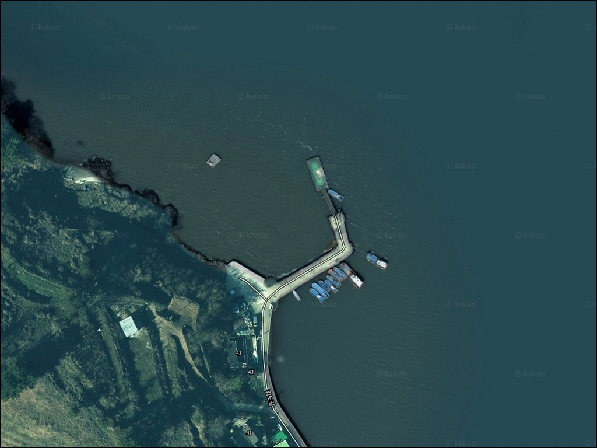
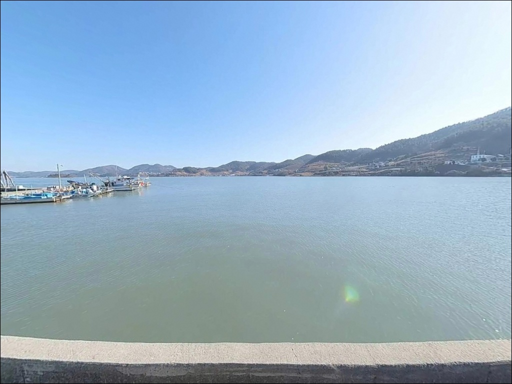
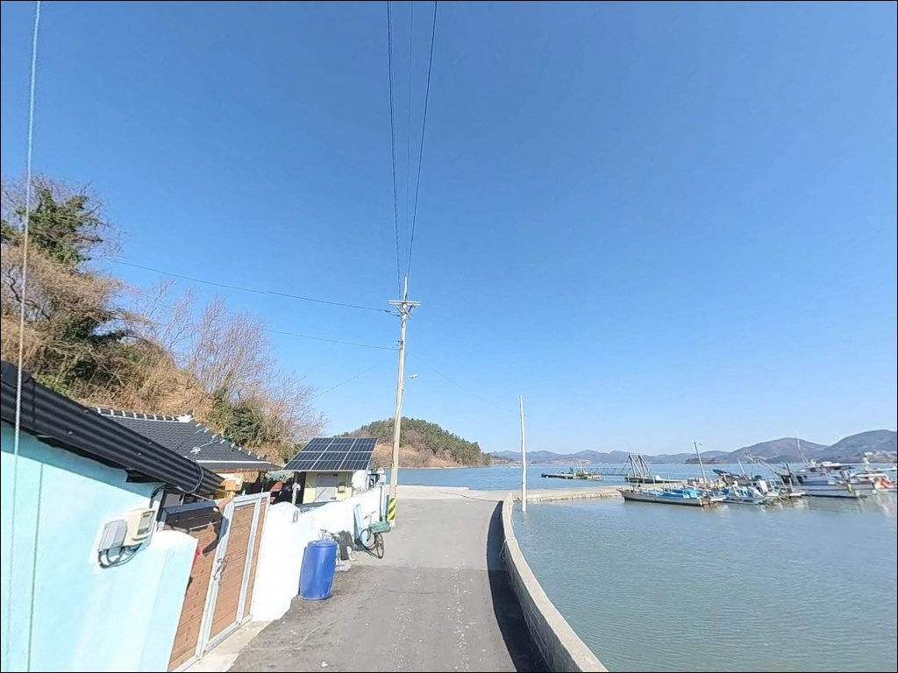
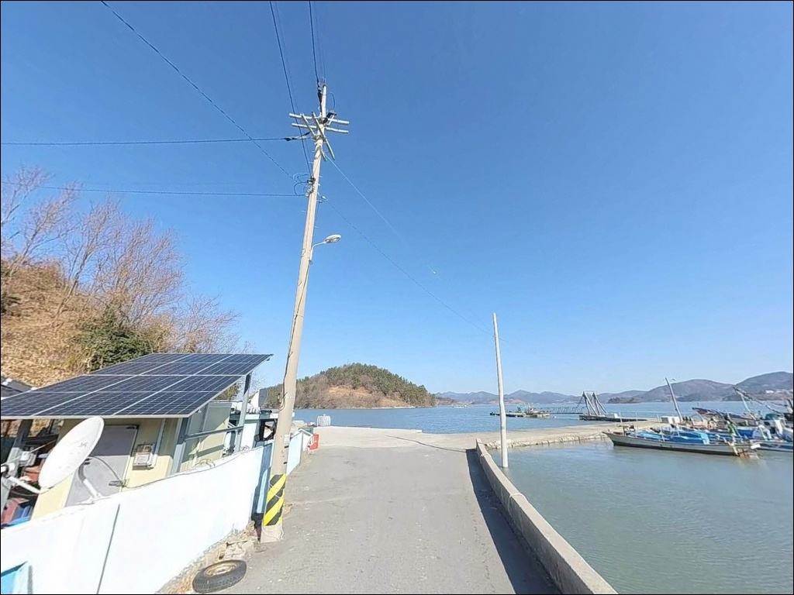
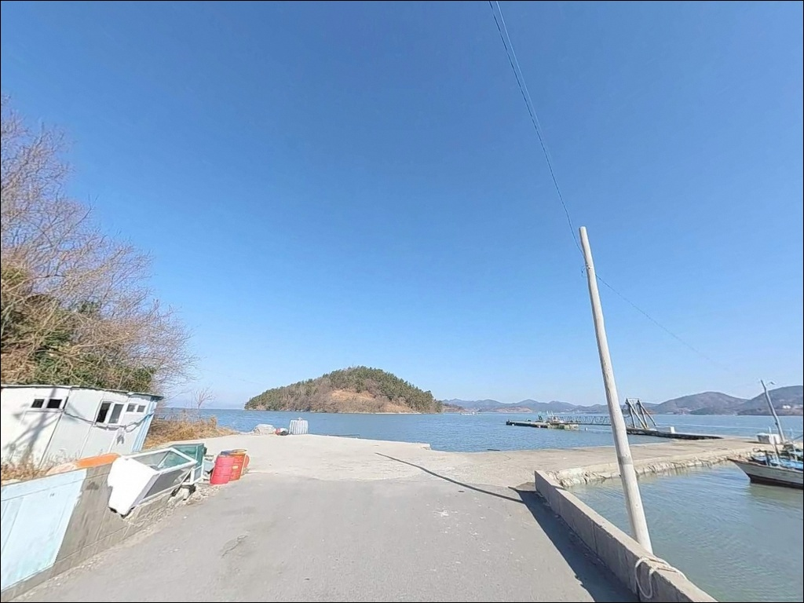
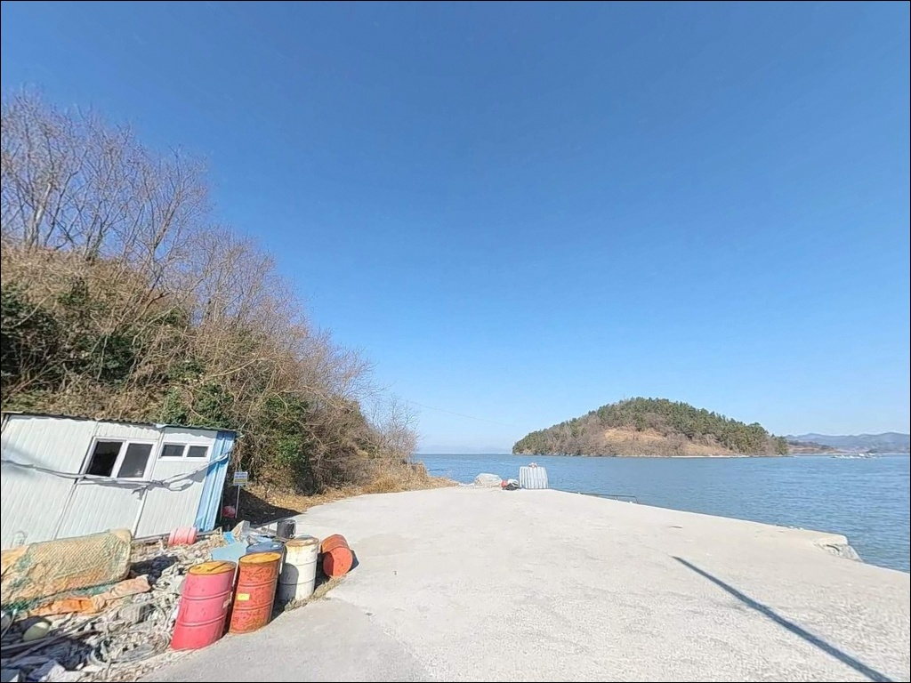
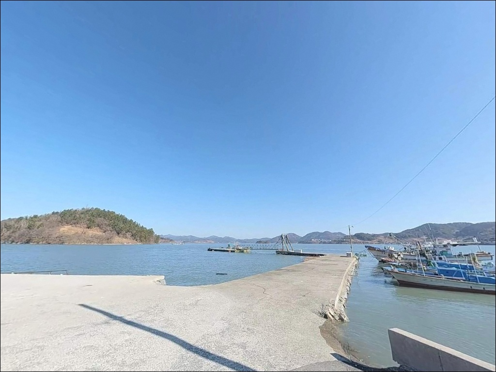
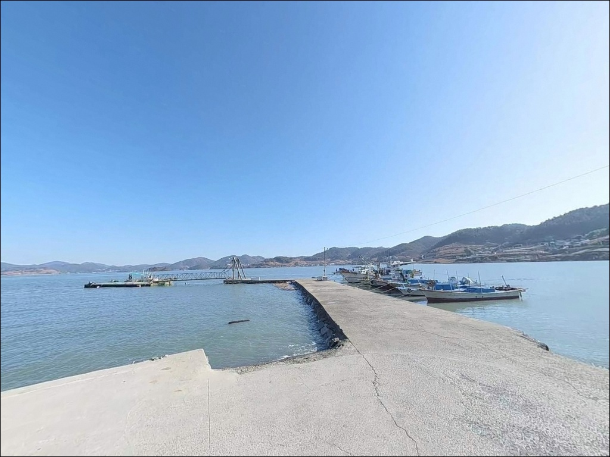
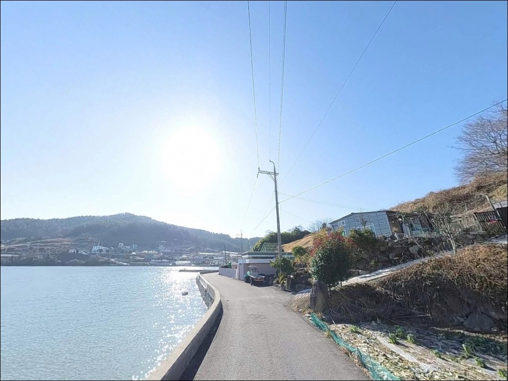

이 페이지에는 광고(제휴 링크 포함)가 있으며, 광고 링크를 통해 구매하면 운영자가 판매 수익 또는 수수료를 받을 수 있습니다. 포인트 사진: 카카오맵 스카이뷰·로드뷰. 이 페이지의 지도·사진 이미지는 카카오맵의 실제 서비스 이미지와 다를 수 있습니다.

이천선착장
전남 여수시 화양면 이천리 586-11
이천선착장에서 외항과 내항을 구분하지 않고
자리를 잡으면 낚시 방식 선택이 처음부터 어긋납니다.
가막만 조류가 L자형 방파제를 거치면서
외항 6~8m 수심과 내항 3~4m 수심으로
공략 조건이 완전히 다른 두 구간이
형성되기 때문입니다.
이 글은
이천선착장의 방파제 구조와 수심 조건,
낚시 스타일 선택 기준,
차박 여건에 집중합니다.
조황 단정이나 특정 어종 보장은
이 글의 범위에 포함되지 않습니다.

화양로에서 화양면 이천리 방향으로 진입하면
선착장까지 이어지는 도로가
평탄하고 폭이 넉넉합니다.
대형 카라반이나 캠핑카도 무리 없이 들어올 수 있는 수준이며,
진입 후 회차 공간도 충분히 확보되어 있습니다.
선착장 입구 쪽 공터와
방파제 시작점 배후지에
20대 이상의 주차 공간이 갖춰져 있습니다.
여수권 방파제 포인트 중에서 주차 여건이
안정적인 편에 속하는 포인트입니다.
주차 후 어선 접안 구역과의 거리를
먼저 확인하는 것이 기본입니다.
마을 어선의 이동 동선과
계류 구역을 피한 자리를 우선 골라야 합니다.

이천선착장 배후 공터는
가막만을 정면으로 바라보는
개방형 구조입니다.
전면으로 개도와 제도 등
여수 앞바다 섬들이 조망되어
야간에도 수평선 방향으로 탁 트인 뷰가 유지됩니다.
방파제와 선착장을 따라
가로등이 설치되어 있어
야간 시야 확보가 안정적입니다.
밤낚시와 차박을 병행할 때
개인 조명 장비 의존도가 낮은 편입니다.
어촌 마을과 인접해 있어
야간 소음에는 주의가 필요합니다.
가막만 내만 구조라 파도 영향은 거의 없지만,
남서풍 계열 바람이 강한 날에는
방파제 전면부가 바람을 직접 받는 구조임을
감안해야 합니다.

이천선착장 부근에
공중화장실이 설치되어 있습니다.
장시간 낚시나 차박 이용에
도움이 되는 여건입니다.
식재료와 낚시 소품은
화양면 소재지인 나진리(약 4km)에서
해결하는 것이 현실적입니다.
화양농협하나로마트가 나진리에 있으며,
주변에 국밥 등 현지 식당이 분포합니다.
화양면 소재지 인근에 낚시점도 있어
부족한 채비는 이동 전에 보충할 수 있습니다.
응급 상황에 대비해 출발 전
연료와 기본 약품을 갖추는 것이 기본입니다.
화양보건지소가 나진리에 있어
가벼운 응급 상황에 대응할 수 있는
거리 안에 위치합니다.

이천선착장은 가막만 내만 해역이라
사리에도 급류가 발생하지 않는 구조이지만,
조류 방향이 바뀌는 타이밍에 따라
입질 반응이 달라지는 편입니다.
바다타임에서 이천리 기준 물때를 확인하고
들물 또는 날물이 살아있는 구간에
집중하는 것이 기본 전략입니다.
외항 테트라포트 구역은
야간이나 비 온 뒤 미끄럽습니다.
방파제 끝단 쪽으로 이동할 때는
안전화와 구명조끼를 반드시 착용해야 합니다.
내항 석축 끝부분은
만조 시 일부 구간이 잠길 수 있어
조위 변화를 미리 파악하는 편이 안전합니다.
방파제 전방 20~30m 지점에
수중여와 암반 지층이 형성되어 있습니다.
채비 손실이 발생할 수 있으므로
여분 채비는 넉넉하게 준비하는 것이 좋습니다.
쓰레기는 전량 수거하고,
종량제 봉투 사용이 기본 매너입니다.

이천선착장은
L자 형태로 꺾인 메인 방파제와
직선형 보조 선착장이 마주 보는 구조입니다.
외항 쪽은 석축 위에 테트라포트가 놓여 있고,
내항은 콘크리트 직벽 구조로 되어 있습니다.
수심은 방파제 끝단 기준 만조 시
6~8m 내외를 유지하며,
내항 쪽은 3~4m권에 머뭅니다.
방파제 정면 바닥은 뻘과 모래가 섞인
평탄한 지형이며,
20~30m 전방에는
수중여와 암반 지층이 형성되어
어군이 모이기 좋은 조건을 갖추고 있습니다.
가막만 내부를 드나드는 조류의 길목에 위치해
흐름이 일정하고 방향이 명확합니다.
사리 물때에도 채비 컨트롤이 불가능한 수준의
급류는 발생하지 않아
다양한 낚시 방식을 동시에 운용할 수 있습니다.
이천선착장 외항 방파제 끝단은
가막만 조류가 집중되는 지점으로
찌낚시와 에깅 모두 반응이 살아나는 자리입니다.
최신 조황은 출조 전
"여수 이천선착장 낚시" 또는
"화양면 낚시 조황" 키워드로
검색해 확인하는 것이 좋습니다.

찌낚시는 이 포인트의 메인 장르입니다.
외항의 꺾이는 지점부터 끝단까지
감성돔을 대상으로
전유동 또는 반유동 방식이 잘 맞습니다.
봄에는 산란기 갑오징어,
가을에는 감성돔 조과가 두드러지는
시즌 편차가 뚜렷한 포인트입니다.
에깅은 외항 석축 근처와
바닥층을 공략하는 방식으로
갑오징어와 주꾸미를 노릴 수 있습니다.
조류가 살아있는 구간에서
에기를 멀리 보낸 뒤
천천히 바닥 가까이 끌어오는 방식이
이 포인트 지형과 잘 맞습니다.
원투낚시는 내항보다
외항 방향으로 장거리 캐스팅하는
구성이 유리합니다.
사니질 바닥 조건에서
도다리, 보리멸, 붕장어를 기대할 수 있으며
밑걸림이 적어 입문자도
공략하기 수월한 편입니다.
야간에는 가로등 주변에서
볼락과 쏨뱅이를 노리는 라이트게임도 가능합니다.
소형 지그헤드 채비로
석축 구조물 경계를 천천히 탐색하는 방식이
이 포인트 야간 운용에 어울립니다.
L자형 방파제의 꺾이는 지점은
조류 변화가 생기는 경계로,
이 구간이 낚시 자리 선택의 기준이 됩니다.

이천선착장 자리가 여의치 않거나
낚시 강도를 높이고 싶다면
세포방파제가 첫 번째 대안입니다.
이천선착장에서 북쪽으로 약 3km 거리에 있으며,
규모가 더 크고 수심이 깊어
대물 감성돔을 노리는 전문 낚시인이
더 선호하는 포인트입니다.
감도방파제는 서쪽 약 7km 거리에 있는
조용한 포인트입니다.
화양면 권역 내에서 비교적 사람이 적고
단독 출조나 조용한 분위기를 원하는
낚시인에게 어울리는 대안입니다.
차박 중심으로 이동을 고려한다면
굴개해수욕장 주차장이 대안이 됩니다.
해변 뷰를 보며 조용히 머물기에 적합한 공간으로,
이천선착장에서 가까운 거리에 있습니다.

감성돔 찌낚시부터 갑오징어 에깅,
원투낚시, 볼락 라이트게임까지
복수 방식을 고루 운용하는 낚시인에게
이천선착장 L자형 구조는 잘 맞습니다.
외항과 내항 조건이 명확히 나뉘어 있어
조류와 수심을 읽고 자리를 잡는 낚시인일수록
이 포인트가 주는 선택의 폭이 넓어집니다.
낚시 강도에 집중하는 스타일이라면
세포방파제나 감도방파제를 기점으로 삼고
이천선착장을 보조 포인트로 묶는 편이
더 맞을 수 있습니다.
반면 공중화장실, 넓은 주차 공간,
안정적인 진입로를 갖춘
출조 거점을 찾는 낚시인이라면
여수권에서 이 포인트의 여건은
상위권에 속합니다.
낚시를 마친 뒤
가막만 조망과 섬 뷰를 배경으로
하룻밤 조용히 머무는 차박 동선으로도
손색이 없는 포인트입니다.